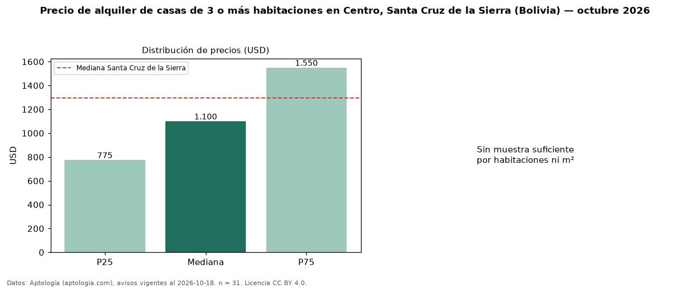

Precio de alquiler de casas de 3 o más habitaciones en Centro, Santa Cruz de la Sierra (Bolivia) — octubre 2026
Con 31 avisos vigentes, el canon mediano de casas de 3 o más habitaciones en alquiler en Centro, Santa Cruz de la Sierra (Bolivia) es USD 1.100 al mes. Frente a la mediana de Santa Cruz de la Sierra para casas de 3 o más habitaciones (USD 1.294), queda 15 % por debajo. Son 74 % de los 42 avisos de casas en alquiler de la zona, cuya mediana general es USD 1.000 (+10 %). La mitad central de los avisos va de USD 775 a USD 1.550 (razón 2,0), una dispersión alta. Datos: Aptología (aptologia.com), CC BY 4.0 — https://www.aptologia.com/bo. Archivos: PDF, CSV con las cifras y gráfica PNG.

| Avisos únicos | 31 |
|---|---|
| Percentil 25 | COP 775 |
| Mediana | COP 1.100 |
| Percentil 75 | COP 1.550 |
Fuente: avisos vigentes de portales inmobiliarios recopilados por Aptología, deduplicados (mínimo 30 avisos únicos por celda). Precios pedidos, no cerrados. Fecha: 2026-10-18.